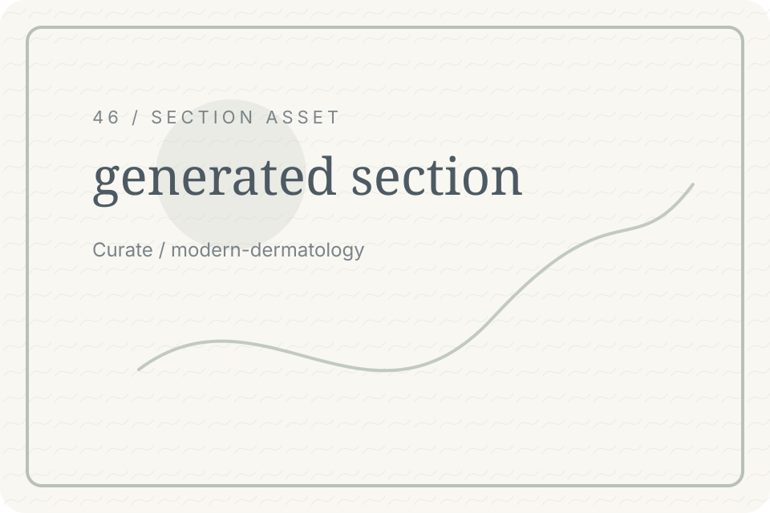
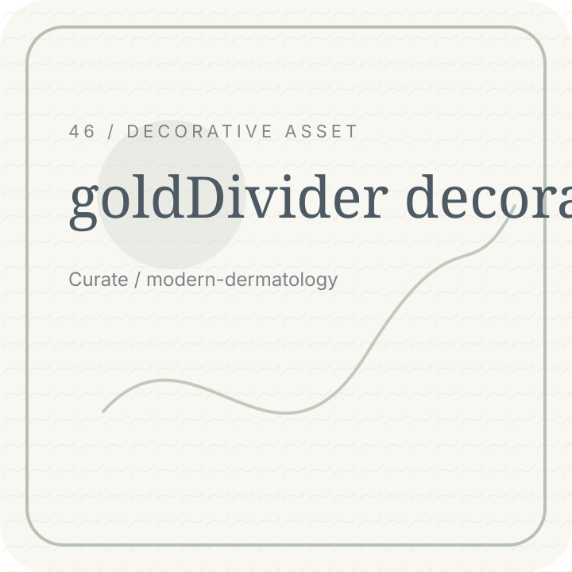
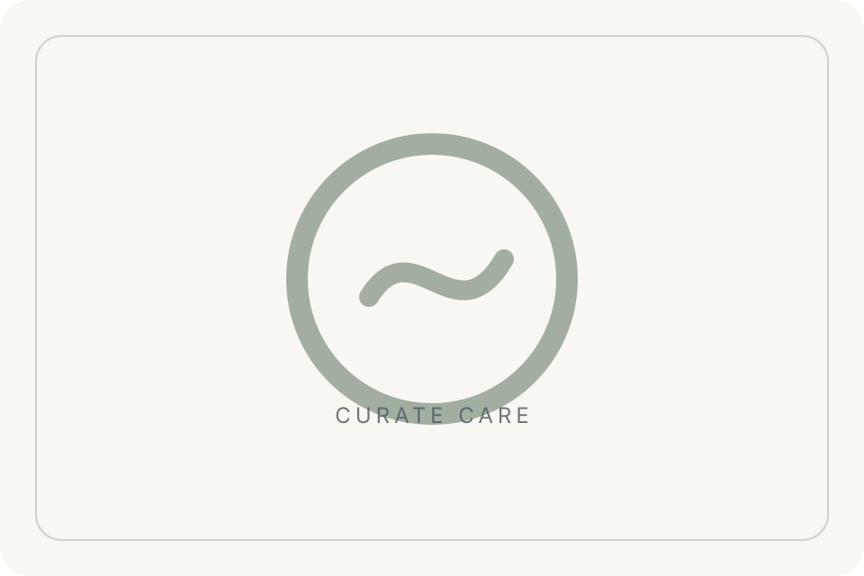

Curate / Sitemap Hero
Site map
Find every important page quickly.

concept-specific hero asset for Sitemap Hero
Curate / Legal Pages
Legal pages
Open policy and accessibility routes.

gold divider for Legal Pages
Curate / Consultation Path
Start here
Request evaluation or send a message.
CTA image panel for Consultation Path
Curate / Service Pages
Care pages
Explore care, skin, laser, and results.

care service icon set for Service Pages
Curate / Brand Pages
Brand pages
Learn about the mission and values.
gold divider for Brand Pages
Curate / Education Pages
Education
Read journal notes and articles.
journal image for Education Pages
Curate / Trust Pages
Trust pages
Review results, feedback, and privacy.
gold divider for Trust Pages
Curate / Final CTA
Return home
Go back to the beginning or start consultation.
gold divider for Final CTA